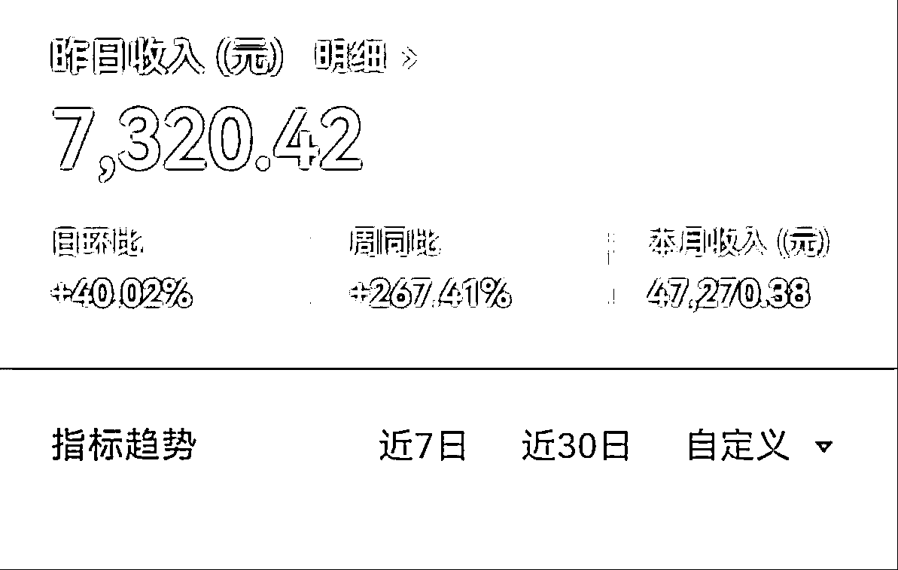
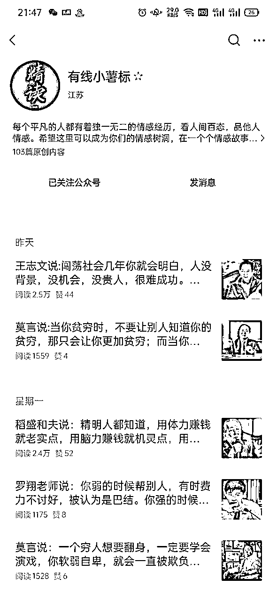
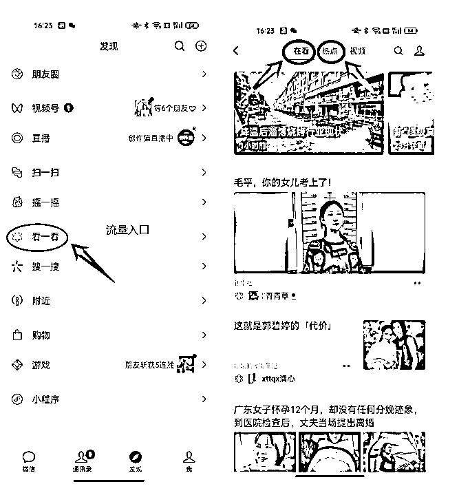
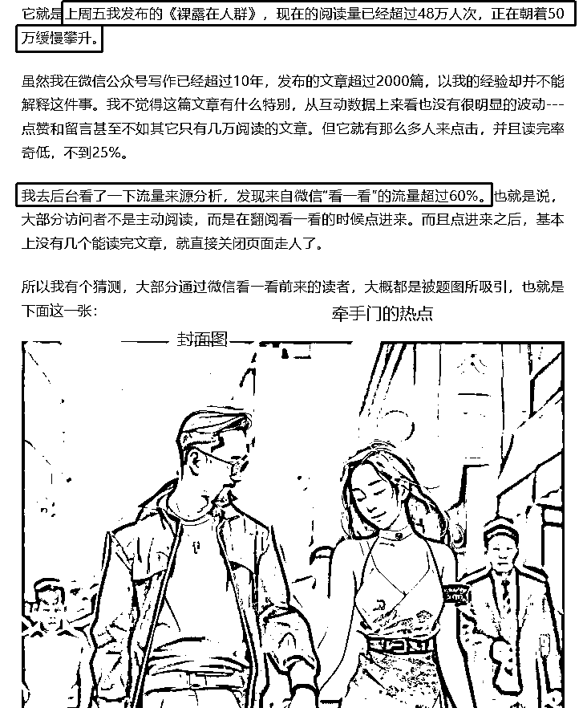
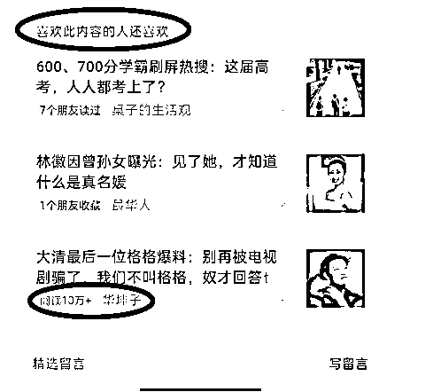
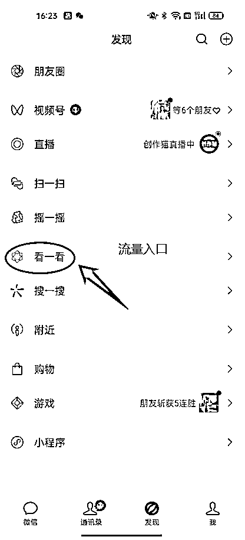
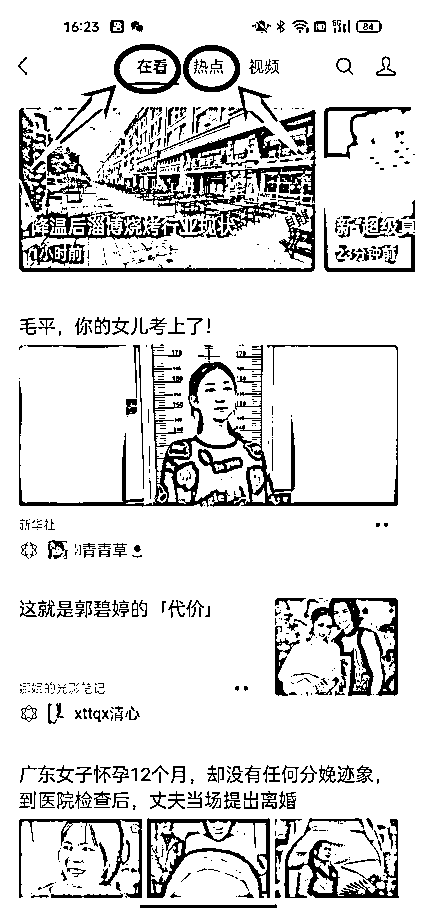

来源：https://hdn8pwdl1l.feishu.cn/docx/OiN5diB7UoA5LBxy0iAcbs1Vnoe
💲
大家好，我是一北，前几天我分享了用GPT创作百家号动态的过程。
当时，我就说自己主要做公众号流量主。但我没有想到，公众号的流量主竟然这么香！
单日最高收益7000+,30天收益破4万+。

而且，我发现随着日更的稳定，爆款率越来越高，这个月我10W+的数量，要比之前3个月，甚至5个月都多。
之前，我还在想，公众号流量主是不是只有几个月的风口期，但现在看，完全不是这样，应该说这个时间还很长。
如果还没有入局公众号流量主的小伙伴，一定要尽快入局。之前，很多人分享了如何用GPT批量生产，哪些领域很火爆等等。
我想从另外几个角度谈一谈。
从目前分享看，情感、老年情感、社会民生、热点等基本都有人分享，说明这次调整有红利的不止一个领域，还有专门做情感语录，同样时不时出10W+。
目前，我没有看到那个领域就一定比其他领域更好赚钱。

乱花渐欲迷人眼，所以我们不用太纠结于做那个领域，而是要判断概率是不是大，以及我是不是可以做。
不是每个人都适合所有的领域，比如追热点，需要的是手速和角度。有的人手速可能就没有那么快。
比如，虚构情感领域，GPT用起来，人有多大胆、地有多大产。
那又有人可能问我，那我究竟适合哪个领域？
答案不在我这里，在对标账号哪里，大家可以去“看一看”热点里，找你感兴趣的文章收藏好，然后不停在这里面找，系统会自动分配给你你感兴趣的爆文。

最后，把你看过的爆文做一个归类，看看那个领域爆款多。
有一个小伙伴给我说，刚开始想做语录类，后来通过这种方式找对标后，发现社会民生类爆款更多，准备调整方向。
没有那个更好做，只有那个更适合自己。
同样，我要写什么选题？不是我决定的，而是平台所决定的，平台喜欢推什么，我就写什么，同样是跟着爆文学习。
我建议大家建一个爆文的选题库，
| 序号 | 标题 | 阅读量 | 关键词分析 | 举一反三 |
|---|---|---|---|---|
| 01 | 上海最牛公务员: 43岁收入超4100万，官至副厅级，他的背后不简单 | 10W+ | 公务员、4100万、副厅级 | 上海一公务员，年级轻轻官至副厅，3年收入4100万，网友：背景不简单 |
| 02 | 2.云南考生林万东，清华开学典礼上，校长亲自点名，他考了多少分? | 10W+ | 清华、高考、校长 | 河北考生XXX，清华校长亲自登门送通知书，他考了多少分？ |
第一种是原选题仿写
第二种是写其他类似人物
只要你的文章，符合读者阅读的兴趣，符合公众号推荐的数据算法，那么就会得到大量的推荐。
PS：如果有懂爬虫技术的小伙伴，也求合作，我觉得通过抓取的方式来获得爆文一定能解决很多人的大问题。我目前，都是自己收集，感觉还是浪费时间。
新手不要自己想当然得做选题，一定要根据对标账号的爆款来做模仿和举一反三。
这是社群中一个小伙伴给我报喜，其实这个选题就是我看到后，发给小伙伴的。
还有高考时，我自己写，社群小伙伴也写了很多，无一例外，很香很香。这就是选题的力量。
大V和菜头写了一篇文章《被流量撞了一下头》，说明了这次公众号推荐机制变化后，标题和首图重要性。
这种重要性，超过了80%。

我觉得什么正文都可以交给GPT，唯独标题，即便是GPT做完了，我们还要再多分析几遍，确保标题能有很强的吸睛点。
这一点的重要性，我们从现在推荐机制改革后，推荐位的展现就能看出来。
1.文末的推荐
我们文章结尾处有一个点赞和在看，凡是一个读者点击了在看，都会被这个读者朋友看到。
更重要的是，下面会跳出来你可能感兴趣的文章。
比如这一篇爆文下面，分别出现了桌子的生活观、最华人、华坤子3个账号，其中最后一个就是小号。
有时候阅读只有几百，但也经常获得这种机制的推荐，出10W+爆款。

2.订阅号里的推荐
规则改变后，我们的订阅号信息里，不仅有我们订阅的账号，也有数据算法推荐的我们可能感兴趣的内容。
如果文章被订阅号页面推荐了，数据会爆发式增长，成为10W+的概率就会大大增加。
3.微信“看一看”
看一看也是流量入口，点击后一个是“在看”，你朋友看什么会推荐给你。
一个是“热点”，推荐的就是一些你可能感兴趣的文章，进入这里的基本都是很爆的内容。


这时就组成了标题+图片的信息流，决定我们是否打开的因素就是标题——图片。
标题：采取3段式或3段式，字数不超过35个字最佳
标题中一定要有反转、反常、冲突、热词、冲突、数字等看点要素。
一个正儿八经的标题，是很难吸引读者的。所以就要噱头足一点，自己起完之后看一看。
真的，我现在每天花在公众号的时间都在6个小时以上，说实话我还做了一部分征稿。
提高输出效率的方法，有这么几种
1.AI辅助，因为我不是虚构情况，所以大多数时候，是投喂素材，请它改写
2.模块化输出，我之前写文积累的经验，就是我今天写的文章，用到的素材或者观点，明天写另外一篇文章可以直接套用。
尤其是写一个人，比如你写王家卫，可以写N篇，王家卫跟刘德华、张国荣、梁朝伟等等的恩怨等，模块化可以大大的提高效率。
3.征稿，征稿也是一个不错的方式，可以从从小红书或者BOSS，找了几个兼职，缺点是需要培养。大家也可以找培训班合作，缺点是价格会高。
最后，一定要追求量，真的字数1200字，就是一篇小短文，除了标题精心打磨外，正文只要基本通顺，无错别字，细节OK，就差不多。
每天更新2-3篇，能极大的活跃账号，从当下各个平台看，能稳定更新的，才会给更大的流量。
公众号流量主，大家抓紧时间入局，因为真的很挣钱。
感谢生财这个平台，我也在学习中，欢迎探讨交流：yibei1985